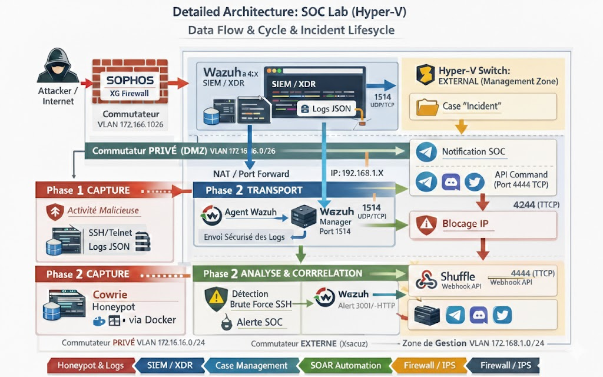

Architecture Complète

Architecture complète d'un Security Operations Center avec Wazuh SIEM/XDR, gestion centralisée des alertes et orchestration d'incidents via Shuffle.

Ce projet implémente un SOC (Security Operations Center) complet en environnement Hyper-V. L'architecture est conçue pour capturer, transporter, analyser et répondre aux incidents de sécurité en temps réel. Le système utilise Wazuh comme SIEM/XDR central, complété par Sophos XG Firewall pour la détection réseau et Shuffle pour l'orchestration automatisée des réponses aux incidents.
Collecte centralisée des événements de sécurité depuis plusieurs sources
Transmission sécurisée des logs vers le manager central
Traitement intelligent et détection des incidents
Dissémination des alertes via multiples canaux
Automatisation des actions de réponse aux incidents
Couches de sécurité complémentaires
Commutateur PRIVÉ isolé. Contient l'agent Wazuh et la détection SSH.
Commutateur EXTERNE. Héberge le manager Wazuh, Shuffle et la base de données.
Commutateur VLAN 192.168.1.0/24. Serveurs en production monitorés.
Commutateur VLAN 192.168.1.024. Pare-feu avancé avec détection réseau.
VLAN 172.16.16.0/24 - Isolé et sécurisé pour les agents de collecte.
Zone de gestion publique pour Shuffle et notifications externes.
Wazuh SIEM
Sophos Firewall
Shuffle API
Elasticsearch
Docker Cowrie
Alertes JSON
Hyper-V
Slack/Discord
Port: 1514 (UDP/TCP) - Cœur du SIEM/XDR. Collecte, corrèle et analyse les logs de sécurité.
Déploiement sur les endpoints. Collecte les logs SSH, système et application.
Port: 4444 (TTCP) - Plateforme d'orchestration pour l'automatisation des incidents.
Port: 4244 (TCP) - Réponse immédiate au contrôle central pour bloquer les menaces.
Pare-feu avancé. Détection réseau et prévention des intrusions (NGFW).
Container Docker. Leurre SSH pour capturer les brute force et exploits.
Un attaquant tente un accès SSH ou exploit via le Sophos XG Firewall (VLAN 192.168.1.024).
Les logs SSH et les honeypot Cowrie envoient les événements au Manager Wazuh via l'Agent (Port 1514).
Wazuh SIEM/XDR corrèle les événements et génère des alertes en temps réel (JSON).
Création de cases "Incident" avec détails complets (attaquant, target, règle déclenchée).
Shuffle reçoit l'alerte et envoie des notifications via Telegram, Discord, Twitter.
Shuffle déclenche le blocage IP automatisé (Port 4244 TTCP) via le pare-feu Sophos.
Détection et réponse aux incidents en temps réel avec SIEM/XDR Wazuh.
Architecture multi-zone avec DMZ isolée (VLAN 172.16.16.0/24) pour la capture.
Orchestration d'incidents via Shuffle et blocage IP automatisé en réponse.
Architecture Hyper-V permettant l'ajout de nouveaux agents et sources facilement.
Intégrations avec Sophos XG, Cowrie, Elasticsearch, et services externes (Slack, Discord).
Logs JSON structurés, traçabilité complète et archivage sécurisé des alertes.